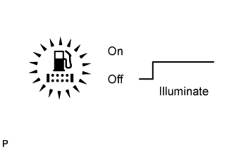
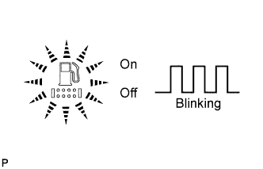

FUEL SYSTEM > ON-VEHICLE INSPECTION |
| 1. INSPECT FUEL PRESSURE |
Read Data List.
Warm up the engine.
Turn the engine switch off.
Connect the intelligent tester to the DLC3.
Turn the engine switch on (IG).
Turn the intelligent tester ON.
Enter the following menus: Powertrain / Engine / Data List.
Read the Data List.
| Tester Display | Measurement Item/Range (Display) | Normal Condition |
| Fuel Press | Fuel pressure / Min.: 0 kPa, Max.: 250000 kPa | 27000 to 37000 kPa: Idling |
| Target Common Rail Pressure | Target common rail pressure / Min.: 0 kPa, Max.: 250000 kPa | 25000 to 180000 kPa |
| 2. INSPECT FOR FUEL LEAK |
Perform Active Test.
Connect the intelligent tester to the DLC3.
Turn the engine switch on (IG).
Start the engine.
Turn the intelligent tester ON.
Enter the following menus: Powertrain / Engine / Active Test.
Perform the Active Test.
| Tester Display | Test Detail | Control Range | Diagnostic Note |
| Test the Fuel Leak | Pressurizes fuel inside common rail and checks for fuel leaks | Stop/Start |
|
| 3. BLEED AIR FROM FUEL SYSTEM |
 |
Using the hand pump indicated by the arrow in the illustration, bleed the fuel system. Continue pumping until pumping becomes difficult.
| 4. CHECK FUEL FILTER WARNING LIGHT AND DRAIN WATER |
w/o Multi-information Display:
 |
Check if the fuel filter warning light is illuminated.
 |
Check if the fuel filter warning light is blinking.
w/ Multi-information Display:
Check the fuel filter multi-information display.
Drain water.
Detach the fuel hose clamp.

Disconnect the clogging switch connector and level warning switch connector.
 |
Remove the 2 nuts and lift up the fuel filter assembly.
Connect a hose to the drain cock. Place the other end of the hose into a container under the drain cock.
Loosen the drain cock to drain water.
Tighten the drain cock by hand.
Install the fuel filter assembly with the 2 nuts.
Connect the clogging switch connector and level warning switch connector.
Attach the fuel hose clamp.